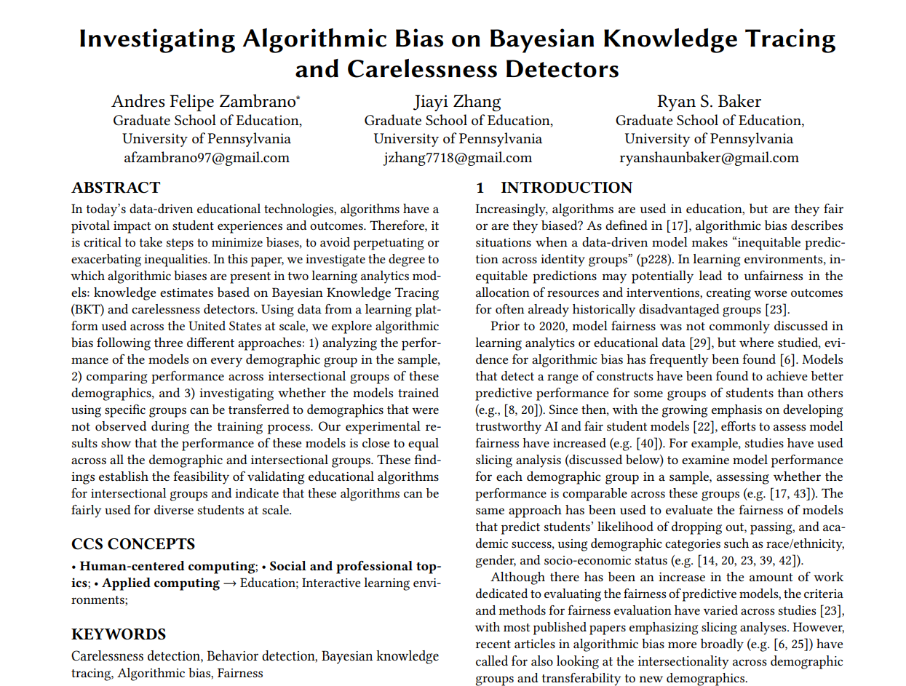
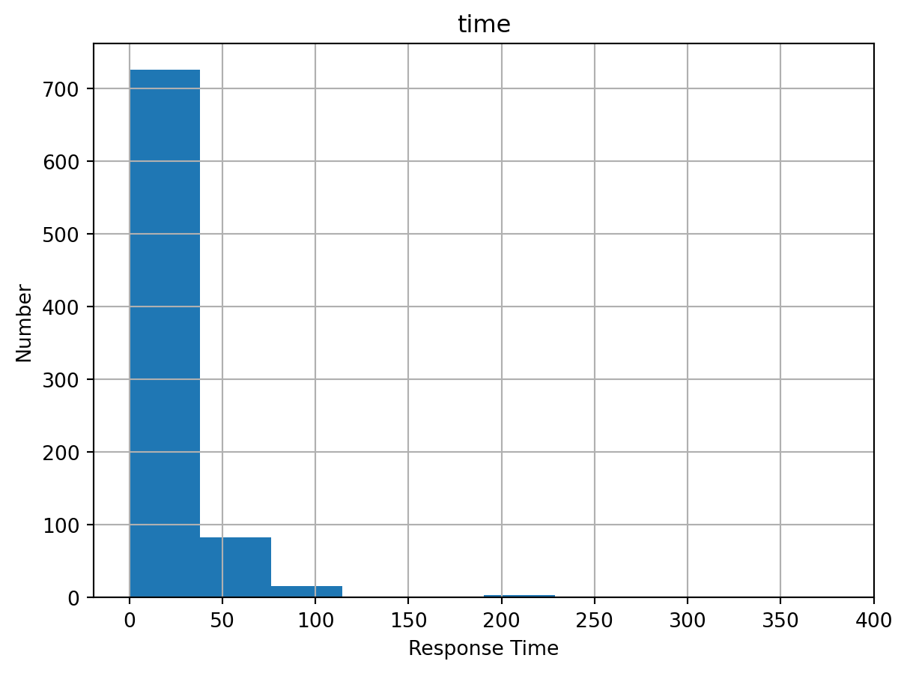
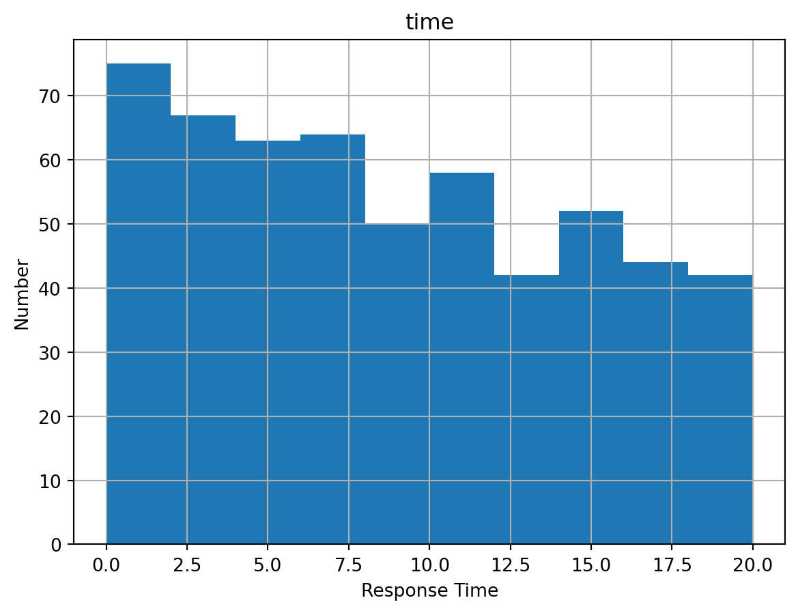
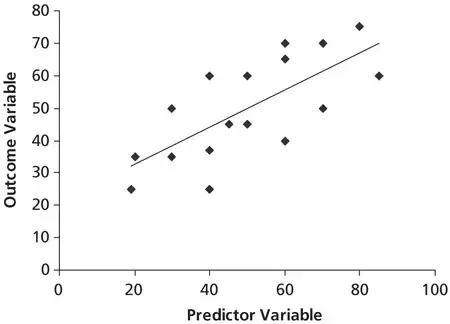
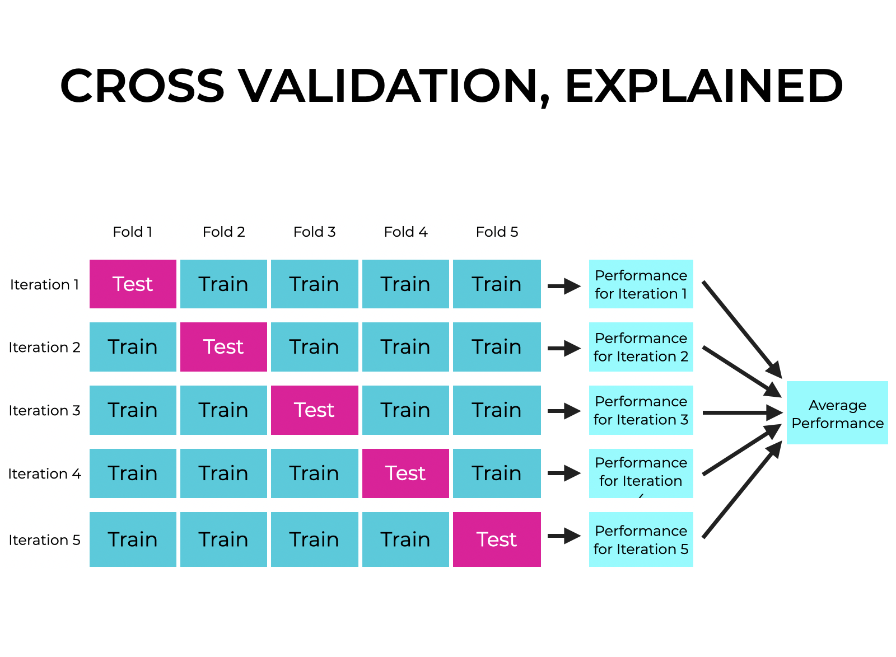
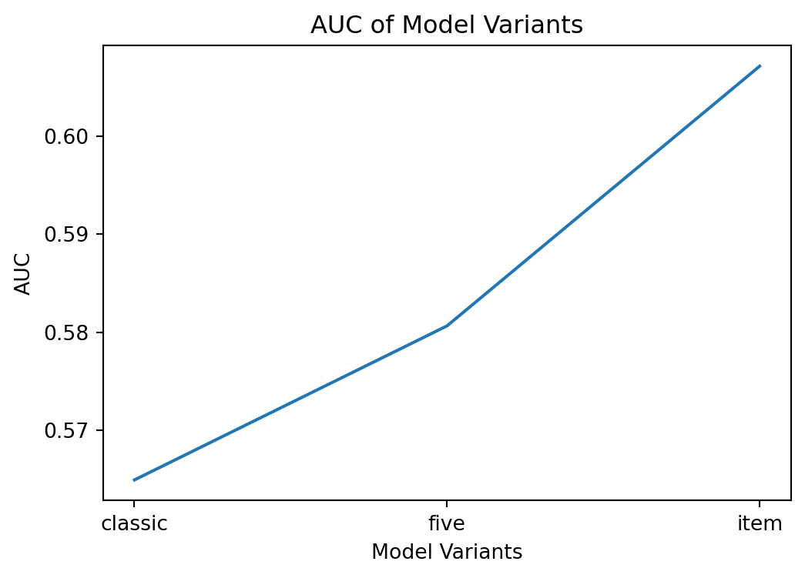
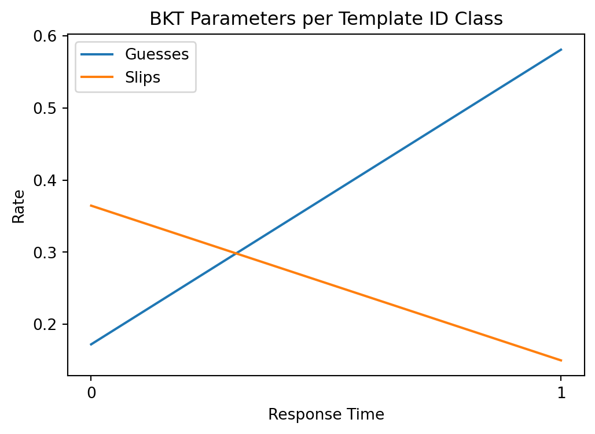
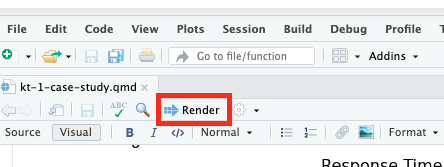
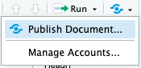

import pandas as pdModule 1: Case Study
Bayesian Knowledge Tracing
1. Prepare
The first KT case study is inspired by the work of Zambrano, Zhang, and Baker (2024), which analyzed the performance of the Bayesian Knowledge Tracing (BKT) model and carelessness detector on every demographic group in the sample. The primary aim of this case study is to gain some hands-on experience with essential Python packages and functions for Bayesian Knowledge Tracing. This case study and those in the modules that follow are organized around data-intensive workflow processes that are common to Learning Analytics (Krumm, Means, and Bienkowski 2018):

In this case study, you will learn how to do the data wrangling, fit the model, and analyze the goodness of the model. Zambrano, Zhang, and Baker (2024) utilized the brute-force grid search (BKT-BF, in Java) to fit the BKT model but you will use pyBKT(Python) here. pyBKT is easier to start with but slower in performance. Specifically, this case study addresses the follow topics:
Prepare: Before analysis, you’ll read a recent paper about BKT, learn about the current trends, and get introduced to the {pandas}, {sklearn}, and {pyBKT} packages for data wrangling and analyzing the BKT model.
Wrangle: Then, we will prepare our data for the analysis. This typically involves data cleaning, preprocessing, and transformation to ensure that the data is in a suitable format for modeling.
Explore: In this part, you will use descriptive statistics. This step helps you understand the characteristics and patterns within the data before proceeding to modeling.
Model: In the model section of the case study, you will learn basic techniques for fitting and evaluating a BKT model. You will also explore a variant of the BKT model and an advanced feature called Roster in the pyBKT package.
Communication: This sections will cover how we can share results of your analysis with wider audience.
1a. Review the Research

In this study, Zambrano, Zhang, and Baker (2024) assessed the degree to which algorithmic biases are present in two learning analytics models: knowledge estimates based on Bayesian Knowledge Tracing (BKT) and carelessness detectors. Specifically, this analysis evaluated the model performance across demographic groups, compared performance across intersectional groups of these demographics, and explored models’ transferability across unobserved demographics. Performance was similar for students of different races, special needs students, English language learners, economically disadvantaged students, and both male and female students. Results show close to equal performance across these groups.
Research Questions
The central goal of this research is to
investigate the degree to which algorithmic biases are present in two learning analytics models: Bayesian Knowledge Tracing (BKT) and carelessness detectors.
Data Collection
The data is from 5,856 students across 12 middle and high schools in a northeastern US city. The students used Carnegie Learning’s MATHia (Ritter et al. (2007)) software for math instruction during the 2021-2022 academic years. The content includes multi-step questions, guiding students through predetermined content sequences. MATHia’s structure closely aligns with the Bayesian Knowledge Tracing (BKT) algorithm.
Analysis
The knowledge estimate for specific skills was calculated using BKT. The authors fitted BKT parameters with brute-force grid search. Upper limits of 0.3 and 0.1 for the ’Guess’ and ’Slip’ parameters were adopted respectively to avoid model degeneracy and ensure the parameter values are aligned with conceptual meaning. Demographic characteristics are not taken into calculation directly when building the BKT model. However, sample sizes are not even across demographic groups so the parameters could be more representative of demographics with a larger number of students.
The authors adopted a 4-fold student level cross-validation that was stratified by demographics and evaluated the model performance with AUC ROC. The max difference between AUC for the best and worst predicted group was also calculated.
Key Findings
As reported by Zambrano, Zhang, and Baker (2024) in their findings section:
We found evidence that performance was close to equal across demographic groups, for these models, including intersectional categories, and tests where we held out entire demographic groups during model training (a test of model applicability to entirely new demographic groups), for carelessness.
❓Question
Before we conclude that this model is free of bias, what other tests or data collection might you want to perform?
Type a brief response in the space below:
1b. Load Packages
In this case study, you will not replicate the data analysis in Zambrano, Zhang, and Baker (2024). Instead, you will use the data from R. S. d. Baker et al. (2008) to learn how to fit a BKT model. First, you will learn about the essential packages you will be using in this case study.
Packages, sometimes called libraries, are shareable collections of Python code that can contain functions, data, and/or documentation and extend the functionality of Python. You can always check to see which Python packages that are not dependencies of other packages have already been installed and loaded into RStudio Cloud using the command pip list in the terminal.
pandas 📦

One package that you’ll be using extensively is {pandas}. Pandas (McKinney 2010) is a powerful and flexible open-source data analysis and wrangling tool for Python. Python is also used widely by the data science community.
Click the green arrow in the right corner of the “code chunk” that follows to load the {pandas} library introduced in LA Workflow labs.
Numpy📦

NumPy (pronounced /ˈnʌmpaɪ/ NUM-py) is a library for the Python programming language, adding support for large, multi-dimensional arrays and matrices, along with a large collection of high-level mathematical functions to operate on these arrays.
Click the green arrow in the right corner of the “code chunk” that follows to load numpy:
import numpy as npPyplot 📦

Pyplot is a module in the {matplotlib) package, a comprehensive library for creating static, animated, and interactive visualizations in Python. pyplot provides a MATLAB-like interface for making plots and is particularly suited for interactive plotting and simple cases of programmatic plot generation.
Click the green arrow in the right corner of the “code chunk” that follows to load pyplot:
import matplotlib.pyplot as pltpyBKT 📦
The {pyBKT} package (Badrinath, Wang, and Pardos 2021) is a Python implementation of the Bayesian Knowledge Tracing algorithm and variants, estimating student cognitive mastery from problem-solving sequences (Badrinath, Wang, and Pardos 2021).
👉 Your Turn ⤵
Use the code chunk below to import the pyBKT package:
# Your code starts here
from pyBKT.models import Model2. WRANGLE
Data wrangling is the process of converting raw data into a format suitable for analysis. Typically, you will go through data wrangling before data analysis to ensure the high quality of the data and high-quality data leans to better performance. Thus, data wrangling is of great importance in any analysis.
2a. Import the dataset
To realize the goals, you’ll need to first import the CSV files originally obtained from R. S. d. Baker et al. (2008) This data set is a subset of the data set used in R. S. d. Baker et al. (2008). A description of each file is below along with a link to the original file:
Example CSV dataset: This BKT dataset consists of 298 students’ performance in 67 skills.
Dataset description: This file includes the descriptions of all the variables in this dataset.
Let’s use the read_csv function from the {pandas} package to import the AsgnBA3-dataset.csv.
df = pd.read_csv("data/AsgnBA3-dataset.csv")
df.head()| ID | Lesson | Student | KC | item | right | firstattempt | time | |
|---|---|---|---|---|---|---|---|---|
| 0 | 0 | Splot | AGUFADE | VALUING-CAT-FEATURES | META-VALUING-CAT-FEATURES-1 | 1 | 1 | 3.29700 |
| 1 | 1 | Splot | AGUFADE | VALUING-NUM-FEATURES | META-VALUING-NUM-FEATURES-1 | 0 | 1 | 4.04700 |
| 2 | 2 | Splot | AGUFADE | CHOOSE-VAR-TYPE | CHOOSE-VAR-TYPE-NUM-1 | 1 | 1 | 1.59300 |
| 3 | 3 | Splot | AGUFADE | VALUING-NUM-FEATURES | META-VALUING-NUM-FEATURES-1 | 0 | 0 | 2.92200 |
| 4 | 4 | Splot | AGUFADE | CHOOSE-VAR-TYPE | CHOOSE-VAR-TYPE-NUM-2 | 1 | 1 | 1.59400 |
df here stands for “DataFrame” in the Pandas package. A Pandas DataFrame is a two-dimensional data structure, like a two-dimensional array, or a table with rows and columns.
head() on a DataFrame object will display the first 5 rows of the DataFrame.
Remove unnecessary rows
In BKT, only the first attempts matter and are included in calculation. Before moving to the next step, use the code chunk below to filter out all the rows in which the firstattempt equals 1.
df2 = df[df["firstattempt"]==1]Just as a refresher, in the code above we created a new DataFrame df2 by filtering the original DataFrame df. In the expression df[df["firstattempt"]==1], the brackets serve a specific function in the context of Python’s Pandas library:
Outer Brackets: These are used to access elements of the DataFrame
df. In Pandas, brackets are used to select columns (when you use a string or list) or rows (when you use slicing or boolean indexing).Inner Brackets: The inner brackets contain the condition
df["firstattempt"]==1. Here,df["firstattempt"]selects the column named “firstattempt” from the DataFrame, and selects only the rows where the value of the column"firstattempt"is equal to 1.
Essentially, df2 will contain all the rows from df where the first attempt at a the test question is marked by a 1, indicating that it was indeed the student’s first attempt.
👉 Your Turn ⤵
Now filter out all the rows that represent the “CHOOSE-X-AXIS-QUANTITATIVE” skill and assign the result to the variable df3 .
df3 = df2[df2["KC"]=="CHOOSE-X-AXIS-QUANTITATIVE"]Mapping the column names
The accepted input formats in pyBKT are Pandas DataFrames and data files of type CSV (comma separated) or TSV (tab separated). pyBKT will automatically infer which delimiter to use in the case that it is passed a data file. Since column names mapping meaning to each field in the data (i.e. skill name, correct/incorrect) varies per data source, you may need to specify a mapping from your data file’s column names to pyBKT’s expected column names.
Thus, you will need to create a column name mapping before training the model.
defaults = {'order_id': 'ID', 'skill_name': 'KC', 'correct': 'right', 'user_id': 'Student'}This is a dictionary. Dictionaries are used to store data values in key: value pairs. Dictionaries are written with curly brackets. Here’s what each part of the code is doing:
defaults = {...}: This initializesdefaultsas a Python dictionary. Dictionaries in Python are collections of key-value pairs, which are used to store data values like a map.Key-Value Pairs: Inside the dictionary, there are several key-value pairs defined:
'order_id': 'ID'maps the key'order_id'to the value'ID'.'skill_name': 'KC'maps the key'skill_name'to the value'KC'.'correct': 'right'maps the key'correct'to the value'right'.'user_id': 'Student'maps the key'user_id'to the value'Student'.
The column names you need to specify are order_id, skill_name, correct, and user_id. You may refer to the document in 2a about the descriptions of all the variables.
3. EXPLORE
Before we begin learning about how to fit a basic BKT model, we’ll use several methods to explore our data.
3a. Descriptive statistics
Head()
df3.head()| ID | Lesson | Student | KC | item | right | firstattempt | time | |
|---|---|---|---|---|---|---|---|---|
| 21 | 21 | Splot | AGUFADE | CHOOSE-X-AXIS-QUANTITATIVE | CHOOSE-X-AXIS-QUANTITATIVE-1 | 0 | 1 | 3.59400 |
| 263 | 263 | Splot | AOADMAC | CHOOSE-X-AXIS-QUANTITATIVE | CHOOSE-X-AXIS-QUANTITATIVE-1 | 0 | 1 | 9.06200 |
| 391 | 396 | Splot | AOADMAC | CHOOSE-X-AXIS-QUANTITATIVE | CHOOSE-X-AXIS-QUANTITATIVE-2 | 1 | 1 | 15.65600 |
| 483 | 493 | Splot | AOADMAC | CHOOSE-X-AXIS-QUANTITATIVE | CHOOSE-X-AXIS-QUANTITATIVE-3 | 1 | 1 | 5.68700 |
| 559 | 569 | Splot | AOADMAC | CHOOSE-X-AXIS-QUANTITATIVE | CHOOSE-X-AXIS-QUANTITATIVE-4 | 1 | 1 | 9.78200 |
head() is a function provided by pandas for DataFrames. When you call head() on a DataFrame, it shows you the first few rows of your data. By default, it displays the first 5 rows, but you can specify a different number if you want.
Describe()
df3.describe()| ID | right | firstattempt | time | |
|---|---|---|---|---|
| count | 832.00000 | 832.00000 | 832.00000 | 832.00000 |
| mean | 37,436.28005 | 0.68269 | 1.00000 | 20.49003 |
| std | 20,547.14893 | 0.46571 | 0.00000 | 28.66324 |
| min | 21.00000 | 0.00000 | 1.00000 | 0.00000 |
| 25% | 20,365.50000 | 0.00000 | 1.00000 | 6.08975 |
| 50% | 38,358.00000 | 1.00000 | 1.00000 | 13.77500 |
| 75% | 54,615.50000 | 1.00000 | 1.00000 | 24.23625 |
| max | 71,200.00000 | 1.00000 | 1.00000 | 381.03800 |
- describe():
describe()is a function provided by pandas for DataFrames. When you calldescribe()on a DataFrame likedf3, it gives you some basic statistics about the data in each column. These statistics include things like count, mean, standard deviation, minimum, maximum, and various percentiles.
Histogram of Time Column
We could also create a Histogram of the time column using the code chunk below:
df3.hist(column='time', bins= 10)
plt.xlabel('Response Time')
plt.ylabel('Number')
plt.show()
import matplotlib.pyplot as plt: This line imports the Matplotlib library, specifically the submodulepyplot, and assigns it the aliasplt. This makes it easier to refer to Matplotlib functions later in the code.hist_time = df3.hist(column='time'): This line creates a histogram of a specific column named ‘time’ from the DataFrame calleddf3. In this line:df3is the DataFrame we have cleaned so far.hist()is a function provided by pandas to create histograms. You’re specifying the column you want to create the histogram for by passing the argumentcolumn='time'.The result of
hist()is stored in the variablehist_time, although it’s not necessary for the code to function. This variable could be used later if you want to modify or analyze the histogram further.
plt.show(): This line displays the histogram that was created. After you’ve created a plot using Matplotlib, you typically useplt.show()to actually visualize it. Without this line, the histogram would be created but not shown on the screen.
If you would like to look into a specific range, you could add the parameter range= . For example:
df3.hist(column='time', bins= 10, range=[0,20])
plt.xlabel('Response Time')
plt.ylabel('Number')
plt.show()
A parameter refers to a variable that is used in a function or method to receive a value when the function is called. Here’s a simple example in Python:
def greet(name):
print("Hello, " + name + "!")
greet("Alice")Hello, Alice!In this example, name is a parameter of the greet function. When we call the greet function and pass in the argument “Alice”, the value of “Alice” is assigned to the name parameter within the function.
Parameters allow functions to be more flexible and reusable because they enable the function to work with different data each time it is called.
4. MODEL
In this section we’ll learn to fit a basic BKT model, but what exactly does is mean to “fit” a model?
This is an example of model fitting:

In this example, linear regression is used to fit the model and this is one of the simplest techniques. You are fitting the model (the line) to a dataset (the dots). The model will be on the form y = a x + b, and you’re trying to find the optimal values of a and b. You draw a line that best fits the existing data points on average. Once you’ve fitted the model, you can use it to predict outcomes (y-axis) based on inputs (x-axis).
4a. Fit the model
pyBKT makes fitting the model very easy. It only takes 2 lines:
model = Model(seed = 42)
model.fit(data = df3, defaults = defaults)
print(model.params()) value
skill param class
CHOOSE-X-AXIS-QUANTITATIVE prior default 0.50016
learns default 0.44768
guesses default 0.21683
slips default 0.15422
forgets default 0.00000First, use the Model function of the pyBKT package to create a BKT model.
The seed parameter is used to initialize the random number generator. The random number generator needs a number to start with (a seed value), to be able to generate a random number.
Then, use the fit method and input df3 and defaults, the dataset you have cleaned so far, and the column name mapping.
Let’s run the code chunk below to see what are the best parameters.
print(model.params()) value
skill param class
CHOOSE-X-AXIS-QUANTITATIVE prior default 0.50016
learns default 0.44768
guesses default 0.21683
slips default 0.15422
forgets default 0.00000RMSE and AUC
pyBKT provides various ways to evaluate your BKT model, such as RMSE, and AUC.
training_rmse = model.evaluate(data = df3)
training_auc = model.evaluate(data= df3, metric = 'auc')
print("Training RMSE: %f" % training_rmse)
print("Training AUC: %f" % training_auc)Training RMSE: 0.446825
Training AUC: 0.653699The Root Mean Squared Error (RMSE) is one of the two main performance indicators for a regression model. It measures the average difference between values predicted by a model and the actual values. To put it simply, the lower, the better.
AUC ROC is the area under the ROC curve. (baker2024fixingEach?) point out that the ROC curve shows the trade-off between the sensitivity and specificity of the model. When expanded to the entire curve, it shows this trade-off across all possible thresholds.
Create additional metrics
You can even create metrics, such as the sum of squared residuals (SSR), used by BKT-BF R. S. d. Baker et al. (2010).
def SSR(true_vals, pred_vals):
return np.sum(np.square(true_vals - pred_vals))
training_SSR = model.evaluate(data= df3, metric = SSR)
print("Training SSR: %f" % training_SSR)Training SSR: 166.111049The sum of squared residuals (SSR) measures the level of variance in the error term, or residuals, of a regression model. The smaller the residual sum of squares, the better your model fits your data; the greater the residual sum of squares, the poorer your model fits your data.
👉 Your Turn ⤵
Split the data into the training set and the testing set by 80%/20% and fit your BKT model on a skill. This skill should not be the same as the one above or the skill in the ASSISTments activity. Then, evaluate the RMSE and AUC on the test set.
#split the dataset by 80%/20%4b. Conditionalizing in BKT
Conditionalize guess, slip, and learn on other factors
You can also conditionalize guess, slip, or learn on other factors in the BKT model – something used for practical purposes (Beck et al. 2008) and (R. S. Baker, Gowda, and Salamin 2018). You need to provide guess/slip/learn classes to use in fitting the model. Let’s say you are going to fit each item’s priors, learn rate, guess, and slip model with the data Pardos and Heffernan (2011). You will need to first specify which column is the class.
Use the code chunk below to test this variant:
defaults_multi = {'order_id': 'ID', 'skill_name': 'KC', 'correct': 'right', 'user_id': 'Student', 'multigs': 'item', 'multilearn':'item'}
model_multi = Model(seed=42, num_fits = 1)
model_multi.fit(data= df3, multilearn = True, multigs= True, defaults = defaults_multi)
print(model_multi.params()) value
skill param class
CHOOSE-X-AXIS-QUANTITATIVE prior default 0.80665
learns CHOOSE-X-AXIS-QUANTITATIVE-1 0.71828
CHOOSE-X-AXIS-QUANTITATIVE-10 0.45880
CHOOSE-X-AXIS-QUANTITATIVE-11 1.00000
CHOOSE-X-AXIS-QUANTITATIVE-2 0.59323
CHOOSE-X-AXIS-QUANTITATIVE-3 0.58896
CHOOSE-X-AXIS-QUANTITATIVE-4 0.58888
CHOOSE-X-AXIS-QUANTITATIVE-5 0.92769
CHOOSE-X-AXIS-QUANTITATIVE-6 0.45929
CHOOSE-X-AXIS-QUANTITATIVE-7 0.37564
CHOOSE-X-AXIS-QUANTITATIVE-8 0.46272
CHOOSE-X-AXIS-QUANTITATIVE-9 0.88974
guesses CHOOSE-X-AXIS-QUANTITATIVE-1 0.06186
CHOOSE-X-AXIS-QUANTITATIVE-10 0.61002
CHOOSE-X-AXIS-QUANTITATIVE-11 0.00000
CHOOSE-X-AXIS-QUANTITATIVE-2 0.08702
CHOOSE-X-AXIS-QUANTITATIVE-3 0.03506
CHOOSE-X-AXIS-QUANTITATIVE-4 0.03049
CHOOSE-X-AXIS-QUANTITATIVE-5 0.02153
CHOOSE-X-AXIS-QUANTITATIVE-6 0.99353
CHOOSE-X-AXIS-QUANTITATIVE-7 0.00147
CHOOSE-X-AXIS-QUANTITATIVE-8 0.00285
CHOOSE-X-AXIS-QUANTITATIVE-9 0.00000
slips CHOOSE-X-AXIS-QUANTITATIVE-1 0.37164
CHOOSE-X-AXIS-QUANTITATIVE-10 0.50000
CHOOSE-X-AXIS-QUANTITATIVE-11 1.00000
CHOOSE-X-AXIS-QUANTITATIVE-2 0.21020
CHOOSE-X-AXIS-QUANTITATIVE-3 0.23873
CHOOSE-X-AXIS-QUANTITATIVE-4 0.20004
CHOOSE-X-AXIS-QUANTITATIVE-5 0.16110
CHOOSE-X-AXIS-QUANTITATIVE-6 0.16004
CHOOSE-X-AXIS-QUANTITATIVE-7 0.57133
CHOOSE-X-AXIS-QUANTITATIVE-8 0.62499
CHOOSE-X-AXIS-QUANTITATIVE-9 1.00000
forgets CHOOSE-X-AXIS-QUANTITATIVE-1 0.00000
CHOOSE-X-AXIS-QUANTITATIVE-10 0.00000
CHOOSE-X-AXIS-QUANTITATIVE-11 0.00000
CHOOSE-X-AXIS-QUANTITATIVE-2 0.00000
CHOOSE-X-AXIS-QUANTITATIVE-3 0.00000
CHOOSE-X-AXIS-QUANTITATIVE-4 0.00000
CHOOSE-X-AXIS-QUANTITATIVE-5 0.00000
CHOOSE-X-AXIS-QUANTITATIVE-6 0.00000
CHOOSE-X-AXIS-QUANTITATIVE-7 0.00000
CHOOSE-X-AXIS-QUANTITATIVE-8 0.00000
CHOOSE-X-AXIS-QUANTITATIVE-9 0.00000As you can see from the output, each item now has the guess, slip, and learn rate. You can conditionalize on lots of factors, depending on the dataset you collected.
👉 Your Turn ⤵
❓Challenge: Conditionalize slip on response time
For example, perhaps you want to modify to conditionalize slip on whether the time taken was under 5 seconds. Thus, you will have two sets of the 4 classical parameters: one set is for those actions that took more than 5 seconds and the other set is for those actions that take less than 5 seconds. Please notice that this is not exactly great practice. A more sophisticated approach is seen in R. S. d. Baker, Corbett, and Aleven (2008) but it’s feasible with the data set you have.
The current dataset only has response time. You will need to create another binary column for this challenge. Please build this model on the “VALUING-CAT-FEATURES” skill.
Build a Column on whether the students took more than 5 seconds
#This part is just an example and the code will not show to the participants
df4= df2[df2["KC"]=="VALUING-CAT-FEATURES"]
df4.insert(8, 'FiveSecs', 0)
def cal_5secs(row):
if row['time'] > 5:
return 1
else:
return 0
df4["FiveSecs"] = df4.apply(cal_5secs, axis=1)Build your 5 seconds model
#This part is just an example and the code will not show to the participants
defaults_5sec = {'order_id': 'ID', 'skill_name': 'KC', 'correct': 'right', 'user_id': 'Student', 'multigs': 'FiveSecs'}
model_5sec = Model(seed = 42, num_fits = 1)
model_5sec.fit(data= df4, multigs = True,defaults = defaults_5sec)
print(model_5sec.params()) value
skill param class
VALUING-CAT-FEATURES prior default 0.95405
learns default 0.15957
guesses 0 0.17229
1 0.58077
slips 0 0.36455
1 0.15007
forgets default 0.000004c. Cross Validation in BKT
pyBKT also allows you to easily use cross-validation.
Cross-validation is a technique to evaluate the performance of a model on unseen data. The picture below shows how the 5-fold cross-validation works.

Cross-validation is offered as function similar to a combination of fit and evaluate that accepts a particular number of folds, a seed, and a metric(either one of the 3 provided ‘rmse’, ‘auc’ or ‘accuracy’ – a custom Python function)
model2 = Model(seed = 42, num_fits=1)
cross_vali = model2.crossvalidate(data = df3, folds = 10, defaults = defaults, metric = 'auc')
print(cross_vali) auc
skill
CHOOSE-X-AXIS-QUANTITATIVE 0.62969👉 Your Turn ⤵
❓Challenge: Cross-validation on your response time model
Please use the code chunk below to conduct 10-fold cross-validation on your response time model and answer the following question:
Is the model better than classic BKT when conditionalizing slip on response time? Why?
# It is just an example. It will not show in students' version
crossvali_5sec = Model(seed = 42)
cross_validation = crossvali_5sec .crossvalidate(data = df4, folds = 10, defaults = defaults_5sec, metric = 'auc', multigs= True)
print(cross_validation) auc
skill
VALUING-CAT-FEATURES 0.667804c. Other advanced features in pyBKT
pyBKT also offers some other advanced features, such as Roster and Parameter Fixing.
4a. Roster
Roster is used to simulate the learning environment for a group of students learning any combination of individual skills.
You need to first create a backend pyBKT model and fit it on the dataset.
defaults_roster = {'order_id': 'ID', 'skill_name': 'KC', 'correct': 'right', 'user_id': 'Student'}
model_roster = Model()
model_roster.fit(data = df2, defaults = defaults_roster )Then you can use the Roster to create a roster with two students and one skill.
from pyBKT.models import *
roster = Roster(students = ['Jack', 'Rachel'], skills = "VALUING-NUM-FEATURES", model = model_roster)You can update Rachel’s status by adding one or more responses to a particular skill. In this case, Rachel correctly answered one question. Then check Rachel’s updated mastery state and probability.
rachel_new_state = roster.update_state('VALUING-NUM-FEATURES', 'Rachel', 1)
print("Rachel's mastery:", roster.get_state_type('VALUING-NUM-FEATURES', 'Rachel'))
print("Rachel's probability of mastery:", roster.get_mastery_prob('VALUING-NUM-FEATURES', 'Rachel'))Rachel's mastery: StateType.UNMASTERED
Rachel's probability of mastery: 0.5631510310406467👉 Your Turn ⤵
Create a new roster on the model you fitted in section 2. If you add 3 consecutive correct answers to Rachel and 3 consecutive incorrect answers to Jack, will they be assessed as having mastered the skill or not? Use the code chunk below:
#Add 3 consecutive correct answers to Rachel and 3 consecutive incorrect answers to Jack,4b. Parameter Fixing
Another advanced feature supported by pyBKT is parameter fixing, where you can fix one or more parameters and train the model conditioned on those fixed parameters. For example, you could fix the slip rate to 0.2.
model_fixedparam = Model()
defaults = {'order_id': 'ID', 'skill_name': 'KC', 'correct': 'right', 'user_id': 'Student'}
model_fixedparam.coef_ = {'CHOOSE-X-AXIS-QUANTITATIVE': {'slips': np.array([0.2])}}
model_fixedparam.fit(data = df3, fixed=True, defaults = defaults)
model_fixedparam.params()| value | |||
|---|---|---|---|
| skill | param | class | |
| CHOOSE-X-AXIS-QUANTITATIVE | prior | default | 0.67511 |
| learns | default | 0.49644 | |
| guesses | default | 0.04667 | |
| slips | default | 0.20000 | |
| forgets | default | 0.00000 |
👉 Your Turn ⤵
Fix the slip rate to 0.3 and the guess rate to 0.2 when fitting your model, Does the model perform better or worse?
5. COMMUNICATE
5a Visualization
params()
As you may have noticed above, it is very easy to visualize the parameters of your fitted model. Use the code chunk below to check the parameters of the model that conditionalizes on items.
model_multi.params()| value | |||
|---|---|---|---|
| skill | param | class | |
| CHOOSE-X-AXIS-QUANTITATIVE | prior | default | 0.80665 |
| learns | CHOOSE-X-AXIS-QUANTITATIVE-1 | 0.71828 | |
| CHOOSE-X-AXIS-QUANTITATIVE-10 | 0.45880 | ||
| CHOOSE-X-AXIS-QUANTITATIVE-11 | 1.00000 | ||
| CHOOSE-X-AXIS-QUANTITATIVE-2 | 0.59323 | ||
| CHOOSE-X-AXIS-QUANTITATIVE-3 | 0.58896 | ||
| CHOOSE-X-AXIS-QUANTITATIVE-4 | 0.58888 | ||
| CHOOSE-X-AXIS-QUANTITATIVE-5 | 0.92769 | ||
| CHOOSE-X-AXIS-QUANTITATIVE-6 | 0.45929 | ||
| CHOOSE-X-AXIS-QUANTITATIVE-7 | 0.37564 | ||
| CHOOSE-X-AXIS-QUANTITATIVE-8 | 0.46272 | ||
| CHOOSE-X-AXIS-QUANTITATIVE-9 | 0.88974 | ||
| guesses | CHOOSE-X-AXIS-QUANTITATIVE-1 | 0.06186 | |
| CHOOSE-X-AXIS-QUANTITATIVE-10 | 0.61002 | ||
| CHOOSE-X-AXIS-QUANTITATIVE-11 | 0.00000 | ||
| CHOOSE-X-AXIS-QUANTITATIVE-2 | 0.08702 | ||
| CHOOSE-X-AXIS-QUANTITATIVE-3 | 0.03506 | ||
| CHOOSE-X-AXIS-QUANTITATIVE-4 | 0.03049 | ||
| CHOOSE-X-AXIS-QUANTITATIVE-5 | 0.02153 | ||
| CHOOSE-X-AXIS-QUANTITATIVE-6 | 0.99353 | ||
| CHOOSE-X-AXIS-QUANTITATIVE-7 | 0.00147 | ||
| CHOOSE-X-AXIS-QUANTITATIVE-8 | 0.00285 | ||
| CHOOSE-X-AXIS-QUANTITATIVE-9 | 0.00000 | ||
| slips | CHOOSE-X-AXIS-QUANTITATIVE-1 | 0.37164 | |
| CHOOSE-X-AXIS-QUANTITATIVE-10 | 0.50000 | ||
| CHOOSE-X-AXIS-QUANTITATIVE-11 | 1.00000 | ||
| CHOOSE-X-AXIS-QUANTITATIVE-2 | 0.21020 | ||
| CHOOSE-X-AXIS-QUANTITATIVE-3 | 0.23873 | ||
| CHOOSE-X-AXIS-QUANTITATIVE-4 | 0.20004 | ||
| CHOOSE-X-AXIS-QUANTITATIVE-5 | 0.16110 | ||
| CHOOSE-X-AXIS-QUANTITATIVE-6 | 0.16004 | ||
| CHOOSE-X-AXIS-QUANTITATIVE-7 | 0.57133 | ||
| CHOOSE-X-AXIS-QUANTITATIVE-8 | 0.62499 | ||
| CHOOSE-X-AXIS-QUANTITATIVE-9 | 1.00000 | ||
| forgets | CHOOSE-X-AXIS-QUANTITATIVE-1 | 0.00000 | |
| CHOOSE-X-AXIS-QUANTITATIVE-10 | 0.00000 | ||
| CHOOSE-X-AXIS-QUANTITATIVE-11 | 0.00000 | ||
| CHOOSE-X-AXIS-QUANTITATIVE-2 | 0.00000 | ||
| CHOOSE-X-AXIS-QUANTITATIVE-3 | 0.00000 | ||
| CHOOSE-X-AXIS-QUANTITATIVE-4 | 0.00000 | ||
| CHOOSE-X-AXIS-QUANTITATIVE-5 | 0.00000 | ||
| CHOOSE-X-AXIS-QUANTITATIVE-6 | 0.00000 | ||
| CHOOSE-X-AXIS-QUANTITATIVE-7 | 0.00000 | ||
| CHOOSE-X-AXIS-QUANTITATIVE-8 | 0.00000 | ||
| CHOOSE-X-AXIS-QUANTITATIVE-9 | 0.00000 |
model.params() function is used to retrieve the parameters after you fit the model.
Pyplot
The pyplot, a module of the matplotlib, is another powerful tool to visualize your data.
Use the code chunk below to compare the AUC ROC of the classic BKT model, the BKT model that conditionalizes on response time, and the BKT model that conditionalizes on items when conducting 5-fold cross-validation on the “VALUING-NUM-FEATURES” skill.
Run the code chunk below to cross-validate three models respectively.
#Example code
df_compare = df2[df2["KC"]=="QUANTITATIVE-VALUING-DETERMINE-ARBITRARY-SCALEKNOWN"]
print(df_compare)
model_5 = Model()
model_item = Model()
model_classic = Model()
if "FiveSecs" in df_compare.columns:
print("Already there!")
else:
df_compare.insert(8, 'FiveSecs', 0)
df_compare["FiveSecs"] = df_compare.apply(cal_5secs, axis=1)
types = {}
types['classic'] = model_classic.crossvalidate(data = df_compare, folds = 5, defaults = defaults, metric = 'auc')
types['five'] = model_5.crossvalidate(data = df_compare, folds = 5, defaults = defaults_5sec, metric = 'auc', multigs = True)
types['item'] = model_item.crossvalidate(data = df_compare, folds = 5, defaults = defaults_multi, metric = 'auc', multigs = True) ID Lesson Student \
45370 46197 Splot ABVGGAE
45371 46198 Splot ABVGGAE
45372 46199 Splot ABVGGAE
45373 46200 Splot ABVGGAE
45374 46201 Splot ABVGGAE
... ... ... ...
53346 54350 Splot katelynZmulvihill
53347 54351 Splot katelynZmulvihill
53348 54352 Splot katelynZmulvihill
53349 54353 Splot katelynZmulvihill
53350 54354 Splot katelynZmulvihill
KC \
45370 QUANTITATIVE-VALUING-DETERMINE-ARBITRARY-SCALE...
45371 QUANTITATIVE-VALUING-DETERMINE-ARBITRARY-SCALE...
45372 QUANTITATIVE-VALUING-DETERMINE-ARBITRARY-SCALE...
45373 QUANTITATIVE-VALUING-DETERMINE-ARBITRARY-SCALE...
45374 QUANTITATIVE-VALUING-DETERMINE-ARBITRARY-SCALE...
... ...
53346 QUANTITATIVE-VALUING-DETERMINE-ARBITRARY-SCALE...
53347 QUANTITATIVE-VALUING-DETERMINE-ARBITRARY-SCALE...
53348 QUANTITATIVE-VALUING-DETERMINE-ARBITRARY-SCALE...
53349 QUANTITATIVE-VALUING-DETERMINE-ARBITRARY-SCALE...
53350 QUANTITATIVE-VALUING-DETERMINE-ARBITRARY-SCALE...
item right firstattempt \
45370 META-QUANTITATIVE-VALUING-DETERMINE-ARBITRARY-... 1 1
45371 META-QUANTITATIVE-VALUING-DETERMINE-ARBITRARY-... 1 1
45372 META-QUANTITATIVE-VALUING-DETERMINE-ARBITRARY-... 1 1
45373 META-QUANTITATIVE-VALUING-DETERMINE-ARBITRARY-... 1 1
45374 META-QUANTITATIVE-VALUING-DETERMINE-ARBITRARY-... 1 1
... ... ... ...
53346 META-QUANTITATIVE-VALUING-DETERMINE-ARBITRARY-... 1 1
53347 META-QUANTITATIVE-VALUING-DETERMINE-ARBITRARY-... 1 1
53348 META-QUANTITATIVE-VALUING-DETERMINE-ARBITRARY-... 1 1
53349 META-QUANTITATIVE-VALUING-DETERMINE-ARBITRARY-... 1 1
53350 META-QUANTITATIVE-VALUING-DETERMINE-ARBITRARY-... 1 1
time
45370 3.42500
45371 2.88400
45372 7.22000
45373 2.40400
45374 2.96400
... ...
53346 1.92000
53347 1.81000
53348 2.31000
53349 4.12000
53350 5.71000
[6445 rows x 8 columns]Then use the code chunk below to plot them:
df_auc = pd.concat(types.values())
print(df_auc)
df_auc['modeltype'] = types.keys()
plt.figure(figsize = (6, 4))
plt.plot(df_auc['modeltype'], df_auc['auc'])
plt.title('AUC of Model Variants')
plt.ylabel('AUC')
plt.xlabel('Model Variants')
plt.show() auc
skill
QUANTITATIVE-VALUING-DETERMINE-ARBITRARY-SCALEK... 0.56494
QUANTITATIVE-VALUING-DETERMINE-ARBITRARY-SCALEK... 0.58065
QUANTITATIVE-VALUING-DETERMINE-ARBITRARY-SCALEK... 0.60714
let’s break down this code step by step:
df_auc = pd.concat(types.values()): This line creates a DataFrame calleddf_aucby concatenating the values of a dictionary calledtypes. Each value in the dictionary is assumed to be a DataFrame. This concatenation essentially stacks these DataFrames on top of each other to create a single DataFrame.print(df_auc): This line prints out the DataFramedf_auc, showing its contents. This is useful for inspecting the data and understanding its structure.df_auc['modeltype'] = types.keys(): This line adds a new column to the DataFramedf_auccalled ‘modeltype’. It assigns the keys of thetypesdictionary to this column. This associates each row in the DataFrame with a particular model type.plt.figure(figsize=(6, 4)): This line creates a new figure for plotting with Matplotlib and specifies its size to be 6 inches wide and 4 inches tall. This sets up the canvas for our plot.print(df_auc['auc']): This line prints out the ‘auc’ column of the DataFramedf_auc. This column presumably contains the Area Under the Curve (AUC) values, which are commonly used to evaluate the performance of classification models.plt.plot(df_auc['modeltype'], df_auc['auc']): This line creates a line plot using Matplotlib. It specifies the x-values to be the ‘modeltype’ column ofdf_aucand the y-values to be the ‘auc’ column. This will plot the AUC values for each model variant against their respective model types.plt.title('AUC of Model Variants'): This line sets the title of the plot to ‘AUC of Model Variants’.plt.ylabel('AUC'): This line sets the label for the y-axis to ‘AUC’, indicating that the y-values represent Area Under the Curve.plt.xlabel('Model Variants'): This line sets the label for the x-axis to ‘Model Variants’, indicating the different variants of models being compared.plt.show(): This line displays the plot that was created using Matplotlib. After you’ve set up your plot, you useplt.show()to actually visualize it on the screen.
👉 Your Turn ⤵
Use the code chunk below to plot the slips and guesses for each class of your response time model.
import warnings
warnings.simplefilter(action='ignore')
params = model_5sec.params()
plt.figure(figsize = (6, 4))
plt.plot(params.loc[("VALUING-CAT-FEATURES", 'guesses')], label = 'Guesses')
plt.plot(params.loc[("VALUING-CAT-FEATURES", 'slips')], label = 'Slips')
plt.xlabel('Response Time')
plt.ylabel('Rate')
plt.title('BKT Parameters per Template ID Class')
plt.legend();
plt.show()
5b Render and Publish your file
Render File
For your SNA Badge, you will have an opportunity to create a simple “data product” designed to illustrate some insights gained from your analysis and ideally highlight an action step or change idea that can be used to improve learning or the contexts in which learning occurs.
For now, we will wrap up this case study by converting your work to an HTML file that can be published and used to communicate your learning and demonstrate some of your new R skills. To do so, you will need to “render” your document by clicking the 
Render button in the menu bar at that the top of this file.
Rendering a document does two important things:
checks through all your code for any errors; and,
creates a file in your directory that you can use to share you work .
Now that you’ve finished your first case study, click the “Render” button in the toolbar at the top of your document to covert this Quarto document to a HTML web page, just one of the many publishing formats you can create with Quarto documents.
If the files rendered correctly, you should now see a new file named kt-1-case-study.html in the Files tab located in the bottom right corner of R Studio. If so, congratulations, you just completed the getting started activity! You’re now ready for the unit Case Studies that we will complete during the third week of each unit.
Important
If you encounter errors when you try to render, first check the case study answer key located in the files pane and has the suggested code for the Your Turns. If you are still having difficulties, try copying and pasting the error into Google or ChatGPT to see if you can resolve the issue. Finally, contact your instructor to debug the code together if you’re still having issues.
Publish File
Rendered HTML files can be published online through a variety of ways including Posit Cloud, RPubs , GitHub Pages, Quarto Pub, or other methods. The easiest way to quickly publish your file online is to publish directly from RStudio.

Congratulations, you’ve completed the case study!
References
Badrinath, Anirudhan, Frederic Wang, and Zachary Pardos. 2021. “Pybkt: An Accessible Python Library of Bayesian Knowledge Tracing Models.” arXiv Preprint arXiv:2105.00385.
Baker, Ryan S, Sujith M Gowda, and Eyad Salamin. 2018. “Modeling the Learning That Takes Place Between Online Assessments.” In Proceedings of the 26th International Conference on Computers in Education, 21–28.
Baker, Ryan SJ d, Albert T Corbett, and Vincent Aleven. 2008. “More Accurate Student Modeling Through Contextual Estimation of Slip and Guess Probabilities in Bayesian Knowledge Tracing.” In Intelligent Tutoring Systems: 9th International Conference, ITS 2008, Montreal, Canada, June 23-27, 2008 Proceedings 9, 406–15. Springer.
Baker, Ryan SJ d, Albert T Corbett, Sujith M Gowda, Angela Z Wagner, Benjamin A MacLaren, Linda R Kauffman, Aaron P Mitchell, and Stephen Giguere. 2010. “Contextual Slip and Prediction of Student Performance After Use of an Intelligent Tutor.” In User Modeling, Adaptation, and Personalization: 18th International Conference, UMAP 2010, Big Island, HI, USA, June 20-24, 2010. Proceedings 18, 52–63. Springer.
Baker, Ryan SJ d, Albert T Corbett, Ido Roll, and Kenneth R Koedinger. 2008. “Developing a Generalizable Detector of When Students Game the System.” User Modeling and User-Adapted Interaction 18: 287–314.
Beck, Joseph E, Kai-min Chang, Jack Mostow, and Albert Corbett. 2008. “Does Help Help? Introducing the Bayesian Evaluation and Assessment Methodology.” In Intelligent Tutoring Systems: 9th International Conference, ITS 2008, Montreal, Canada, June 23-27, 2008 Proceedings 9, 383–94. Springer.
Krumm, Andrew, Barbara Means, and Marie Bienkowski. 2018. Learning Analytics Goes to School. Routledge. https://doi.org/10.4324/9781315650722.
McKinney, Wes. 2010. “Data Structures for Statistical Computing in Python.” In Proceedings of the 9th Python in Science Conference, edited by Stéfan van der Walt and Jarrod Millman, 56–61. https://doi.org/ 10.25080/Majora-92bf1922-00a .
Pardos, Zachary A, and Neil T Heffernan. 2011. “KT-IDEM: Introducing Item Difficulty to the Knowledge Tracing Model.” In User Modeling, Adaption and Personalization: 19th International Conference, UMAP 2011, Girona, Spain, July 11-15, 2011. Proceedings 19, 243–54. Springer.
Ritter, Steven, John R Anderson, Kenneth R Koedinger, and Albert Corbett. 2007. “Cognitive Tutor: Applied Research in Mathematics Education.” Psychonomic Bulletin & Review 14: 249–55.
Zambrano, Andres Felipe, Jiayi Zhang, and Ryan S Baker. 2024. “Investigating Algorithmic Bias on Bayesian Knowledge Tracing and Carelessness Detectors.”